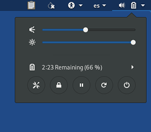

- For issues with graphics cards, see our known issues with graphics cards.
- To learn what you can do with Tails, refer to our documentation.
- For more general questions about Tails, refer to our FAQ.
- Problems starting Tails
- Problematic USB sticks
- Mac
- PC
- "Soft lockup" error
- Acer Travelmate 8573T-254G50M
- Acer Aspire 5315-ICL50
- Acer Chromebook C720P
- AMD Ryzen with Vega graphics cards
- ASUS VivoBook X202E
- Dell Chromebook LULU
- Dell Latitude E5250
- Dell Latitude E6430 and E6230
- Dell XPS L702X/03RG89, Samsung RV520, Samsung Series 7 Chronos
- HP Compaq dc5750 Microtower
- HP Compaq 615
- HP Compaq CQ60-214DX
- HP Notebook BCM943142HM
- HP Pavilion 15-ab277ca
- HP ProBook
- Lenovo IdeaPad Y410p
- Lenovo IdeaPad z585
- Microsoft Surface Laptop 3
- Clevo W258CU, ThinkPad X121e, T420i, T410, T520, W520, W540, T530, T60, E325, and E530
- System76 Oryx Pro
- Wi-Fi issues
- Security issues
- Other issues
- Importing OpenPGP public keys using the Passwords and Keys utility does nothing
- Boot Loader has display issues
- Touchpad configurations
- Bluetooth devices don't work
- Tails fails to start or behaves weirdly after an automatic upgrade
- Persistent folder disappears and data of the Persistent Storage is unavailable
- Some languages do not have the correct keyboard layout set by default
- The OpenPGP passphrase prompt steals the keyboard and mouse focus
- Lenovo ThinkPad 11e
- USB devices are not working on some GIGABYTE motherboards
- Graphics corruption in Tor Browser and Thunderbird
Problems starting Tails
This section lists known problems with specific hardware. To report a problem with different hardware see our report guidelines when Tails does not start.
Problematic USB sticks
PNY
When installing Tails, PNY USB sticks have problems with the constant write load and are prone to failure.
Aegis Secure Key 3.0
To start Tails, remove the live-media=removable boot option. See our instructions on modifying the boot options using the Boot Loader.
Kingston DataTraveler 2000, Kingston DataTraveler 100 G3
Starting Tails from a Kingston DataTraveler 2000 or DataTraveler 100G3 may not work.
Mac
Any Mac with 32-bit EFI might not start on Tails. You can check if a given Mac is 32-bit or 64-bit EFI on that list: https://www.everymac.com/mac-answers/snow-leopard-mac-os-x-faq/mac-os-x-snow-leopard-64-bit-macs-64-bit-efi-boot-in-64-bit-mode.html
MacBook Air Retina 2018 and 2019
To start Tails successfully, add the following boot option when starting Tails:
modprobe.blacklist=thunderboltStill, the trackpad and keyboard may not work. You may use an external mouse and keyboard.
MacBook Pro (recent models): the keyboard, trackpad, and Touch Bar might not work. But, you can use an external keyboard and mouse.
If the keyboard, trackpad, and Touch Bar do work on your recent MacBook Pro model, please let us know so that we can update this page accordingly.
MacBook Pro 8,3 17" (AMD Radeon HD6770M and Intel HD Graphics 3000)
If Tails fails to start, add the following boot option when starting Tails:
radeon.modeset=0MacBook Pro 5,1 17" (Nvidia GeForce 9400M)
To make the display work properly, add the following boot option when starting Tails:
nouveau.noaccel=1MacBook Pro 16,1 (A2141)
The computer freezes then automatically restarts. An error message appears saying that the computer was restarted because of a problem.
To prevent this from occurring, add the following boot option when starting Tails:
amdgpu.dpm=0MacBook Air 3,2 (A1369 EMC 2392) freezes when booting Tails in UEFI mode.
Mac Pro Tower and MacBook Pro 4,1 (both from early 2008) fail to start on Tails.
PC
"Soft lockup" error
On some laptops, Tails starts with the following error:
soft lockup - CPU#N stuck for Ns
To start Tails successfully, add the following boot option when starting Tails:
acpi_rev_override=1 nouveau.modeset=0
Acer Travelmate 8573T-254G50M
Booting from DVD works fine, but does not start from USB sticks.
This problem might be corrected in Tails 1.1 and newer: please report your test results back to us.
Acer Aspire 5315-ICL50
Does not start on USB sticks.
Acer Chromebook C720P
Does not start Tails 4.13.
AMD Ryzen with Vega graphics cards
See graphics.
ASUS VivoBook X202E
Legacy support needs to be enabled in order to start Tails. To enable legacy boot support, enable 'Launch CSM' under boot (menu).
This problem might be corrected in Tails 1.1 and newer: please report your test results back to us.
Dell Chromebook LULU
To start Tails successfully, add the following boot option when starting Tails:
nomodeset
Dell Latitude E5250
Does not start on Tails USB sticks.
Dell Latitude E6430 and E6230
Does not start on USB sticks.
With BIOS versions A03 06/03/2012 (and A09, A11, and A12)
Error message: Invalid partition table!
Workaround (at least with BIOS versions A09, A11, and A12): just hit enter and it will continue with the boot.
Dell XPS L702X/03RG89, Samsung RV520, Samsung Series 7 Chronos
Does not start on USB sticks.
We were reported that the legacy BIOS shipped on these systems doesn't know how to deal with the GPT partition scheme used in Tails.
This problem might be corrected in Tails 1.1 and newer: please report your test results back to us.
HP Compaq dc5750 Microtower
Does not start Tails 1.2.3.
HP Compaq 615
You need to update the firmware to its latest version in order to start from a USB stick.
HP Compaq CQ60-214DX
Tails 3.3 does not start.
HP Notebook BCM943142HM
Does not start Tails 4.13.
HP Pavilion 15-ab277ca
Tails 3.3 restarts during startup and never starts successfully.
HP ProBook
With UEFI enabled, when choosing a boot device, select Boot From EFI File and
then Filesystem Tails and EFI/BOOT/BOOTX64.EFI.
That workaround applied to, at least, the following HP ProBook:
- 5330m
- 4330s
- 6560b
Lenovo IdeaPad Y410p
Does not start Tails 1.1 from USB installed manually in Linux.
Lenovo IdeaPad z585
Goes back continuously to Boot Loader on Tails installed on DVD.
Microsoft Surface Laptop 3
The keyboard and mouse do not work on this laptop. If you find a workaround, please let us know.
Clevo W258CU, ThinkPad X121e, T420i, T410, T520, W520, W540, T530, T60, E325, and E530
These machines do not start on USB sticks due to a firmware limitation.
This problem might be corrected in Tails 1.1 and newer: please report your test results back to us.
System76 Oryx Pro
This machine does not start from a Tails USB stick: the Linux kernel included in at least Tails 3.11 to 3.13.1, inclusive, does not support the hardware USB controller.
Wi-Fi issues
Wi-Fi not working
If your Wi-Fi interface is not working, either:
There is no Wi-Fi option in the system menu:

The interface is disabled when starting Tails or when plugging in your USB Wi-Fi adapter:

In this case, you can disable MAC address anonymization to get your Wi-Fi interface to work in Tails. Disabling MAC address anonymization has security implications, so read carefully our documentation about MAC address anonymization before doing so.
To connect to the Internet, you can try to:
Use an Ethernet cable instead of Wi-Fi if possible. Wired interfaces work much more reliably than Wi-Fi in Tails.
Share the Wi-Fi or mobile data connection of your phone using a USB cable. Sharing a connection this way is called USB tethering.

See instructions for:
iPhones or iPads
Only sharing mobile data works on iPhones and iPads; sharing Wi-Fi does not work.
Tails cannot hide the information that identifies your phone on the local network. If you connect your phone to:
A Wi-Fi network, then the network will know the MAC address of your phone. This has security implications that are discussed in our documentation on MAC address anonymization. Some phones have a feature to hide the real MAC address of the phone.
A mobile data network, then the network will be able to know the identifier of your SIM card (IMSI) and also the serial number of your phone (IMEI).
Buy a USB Wi-Fi adapter that works in Tails:
Vendor Model Size Speed Price Buy offline Buy online Panda Wireless Ultra Nano 150 Mbit/s $12 No Amazon Panda Wireless PAU05 Small 300 Mbit/s $14 No Amazon If you find another USB Wi-Fi adapter that works in Tails, please let us know. You can write to sajolida@pimienta.org (private email).
Check in the following sections if there is a workaround to get your Wi-Fi interface work in Tails.
Knowing the model of your Wi-Fi interface
Open Terminal and execute the following command:
lspci -v | grep "Network controller"
88W8897 [AVASTAR] 802.11ac Wireless
On some computers with a Marvell Avastar 88W8897 Wi-Fi adapter, such as some Microsoft Surface Pro models, Tails fails to connect to Wi-Fi networks.
If you experience this problem, you can try to disable MAC address anonymization that sometimes fixes it.
RTL8723BE PCIe Wireless Network Adapter
On some computers with a RTL8723be Wi-Fi adapter, Tails might fail to discover Wi-Fi networks, provide unreliable Wi-Fi connections, or have poor Wi-Fi performance.
You can try to add the following boot options when starting Tails until you find a combination that works for you. The exact combination of options that works depends on the computer:
rtl8723be.fwlps=0 rtl8723be.ips=0
rtl8723be.ant_sel=1
rtl8723be.ant_sel=2
rtl8723be.ant_sel=1 rtl8723be.fwlps=0 rtl8723be.ips=0
rtl8723be.ant_sel=2 rtl8723be.fwlps=0 rtl8723be.ips=0
Broadcom Wi-Fi network interface needing broadcom-sta-dkms
Some Broadcom Wi-Fi interfaces require the
wl driver, provided by the
broadcom-sta-dkms Debian package, to work in Tails.
The wl driver is not included in Tails because it is proprietary.
Your device requires the wl driver if it is in the list of devices
supported by the broadcom-sta-dkms package on the corresponding
Debian wiki page. If you find your device
in the list of supported devices, then it is impossible to use your
Wi-Fi card in Tails.
Lenovo Legion Y530
Wi-Fi adapter does not work.
To fix this issue, add the following boot option when starting Tails:
modprobe.blacklist=ideapad_laptop
RTL8821CE
The Realtek RTL8821CE Wi-Fi adapter is not supported in Linux yet.
This problem is tracked by Debian bug #917941.
Security issues
Tails does not erase video memory
Tails doesn't erase the video memory yet. When one uses Tails, then restarts the computer into another operating system, that other operating system might, for a moment, display the last screen that was displayed in Tails.
Shutting down the computer completely, instead of restarting it, might allow the video memory to empty itself.
See Erase video memory on shutdown.
Other issues
Importing OpenPGP public keys using the Passwords and Keys utility does nothing
Importing OpenPGP public keys using the Passwords and Keys utility is broken since Tails 4.0 (October 2019). (#17183)
Do so from the Files browser instead:
Choose Applications ▸ Files to open the Files browser.
Double-click on the OpenPGP public key that you downloaded. The key must be in the armored format, usually with a
.ascextension.Choose Open With Import Key.
The imported OpenPGP public key does not appear in the Passwords and Keys utility. But, the key should appear in the list of keys available for encryption when encrypting text with a public key using OpenPGP Applet.
Boot Loader has display issues
Since Tails 1.1, on some hardware (ThinkPad X230, MacBook Pro 8,1), the Boot Loader is not displayed properly. Tails starts fine, though.
Touchpad configurations
Acer TravelMate B113 - ETPS/2 Elantech Touchpad
synclient FingerPress=256;
synclient TapButton3=0;
synclient Clickpad=1;
synclient VertTwoFingerScroll=1;
synclient FingerLow=1;
synclient FingerHigh=1;
Acer C720 - Cypress APA Touchpad
synclient FingerLow=5;
synclient FingerHigh=5;
Lenovo IdeaPad 3 Touchpad
This touchpad does not work by default. To fix this problem, add the following boot option when starting Tails:
pci=nocrs
Bluetooth devices don't work
Bluetooth is not enabled in Tails for security reasons.
Tails fails to start or behaves weirdly after an automatic upgrade
Sometimes, after an automatic upgrade, your Tails might either:
Fail to start. Often after the message:
Loading, please wait...
Behave weirdly. For example, your keyboard does not work or you cannot connect to a network.
To fix this problem, you can update your Tails manually.
Note that your Persistent Storage will be safely preserved.
Persistent folder disappears and data of the Persistent Storage is unavailable
Sometimes, the Persistent folder is missing and all the data of the Persistent Storage is unavailable.
Most likely this means that the persistence.conf file has disappeared. However, the files in the Persistent folder and all the other data in the Persistent Storage should still exist.
If you encounter this problem, you can either:
Turn on again the feature of the Persistent Storage that you need:
Unlock the Persistent Storage in the Welcome Screen when starting Tails.
Choose .
If you are asked to enter a passphrase, enter the same passphrase that you use to unlock your Persistent Storage.
Turn on the features of the Persistent Storage that you had turned on previously.
Click Save, then restart Tails.
Your Persistent folder and all the data of the Persistent Storage should be restored.
Restore the persistence.conf file from its backup:
Unlock the Persistent Storage and set up an administration password when starting Tails.
Execute the following command in a Terminal:
sudo cp -a /live/persistence/TailsData_unlocked/persistence.conf{.bak,}
If neither of the above instructions fixes the problem, you might need to fix the
ownership of TailsData_unlocked.
To fix the ownership of TailsData_unlocked, set an administration password and execute the following command in a terminal:
sudo chown root:root /live/persistence/TailsData_unlocked
Some languages do not have the correct keyboard layout set by default
When selecting some languages in the Welcome Screen, the default associated keyboard layout fallbacks to US.
To use the right keyboard layout during a session, set it in the Welcome
Screen after having set the language. When the desktop has started, apply
the keyboard layout by clicking on the en systray icon.
Affected language codes are AYC, BHB, BRX, CMN, HAK, HNE, LIJ,
LZH, MHR, NAN, NHN, QUZ, SGS, SHS, TCY, THE, UNM, WAE and
YUE.
The OpenPGP passphrase prompt steals the keyboard and mouse focus
This happens when the GnuPG feature of the Persistent Storage was turned on before Tails 2.3. To fix this problem, execute the following command in a terminal:
echo "no-grab" >> ~/.gnupg/gpg-agent.conf
Lenovo ThinkPad 11e
Tails may be unstable and stop working regularly on some Lenovo ThinkPad 11e laptops, such as the 2015 model.
To fix this problem, add the following boot option when starting Tails:
intel_idle.max_cstate=1
USB devices are not working on some GIGABYTE motherboards
To workaround this issue, you can try to:
Use other USB ports. For example, use USB 2 ports instead of USB 3 ports and vice versa.
Enable these 3 options in the BIOS
- xHCI handoff
- EHCI handoff
- IOMMU controller
Add the following boot option when starting Tails:
amd_iommu=on iommu=ptDisable IOMMU in the BIOS then enable it again.
Some of these workarounds may disable some of the USB ports.
Graphics corruption in Tor Browser and Thunderbird
On some computers, Tor Browser and Thunderbird are displayed incorrectly:
- The application window is initially empty and white.
- The icons and menus only appear when hovered by the mouse.
- The contents of the window is only displayed in stripes when scrolling.
To workaround this issue, add the following boot option when starting Tails:
intel_iommu=off
This problem affects at least the following computers:
- MacBookPro11,5
- other MacBooks with a Radeon R9 graphics adapter
Acer Swift 3
In order to allow Tails to use all available memory, start Tails from the F2 EFI setup firmware entry.